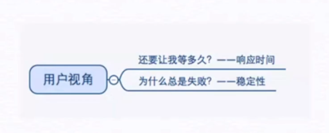
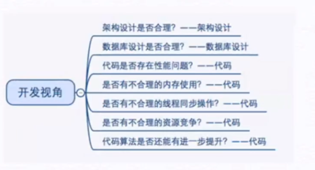
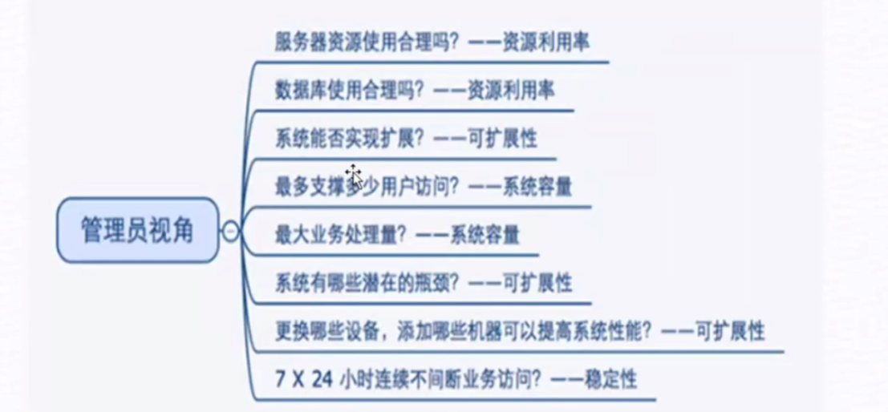
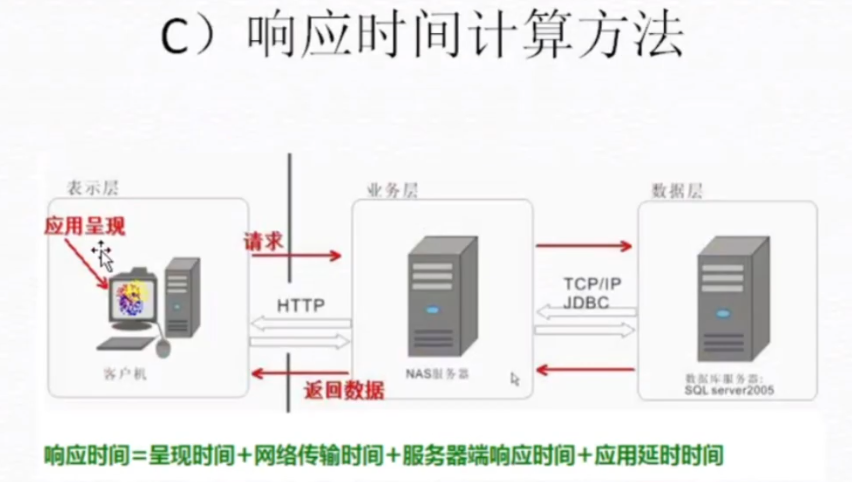
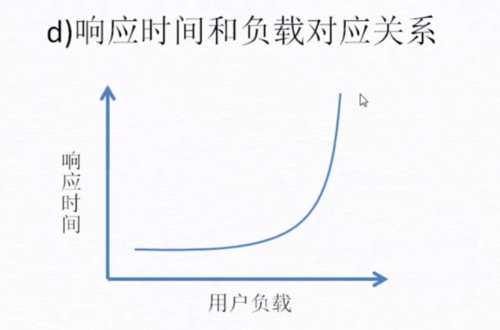
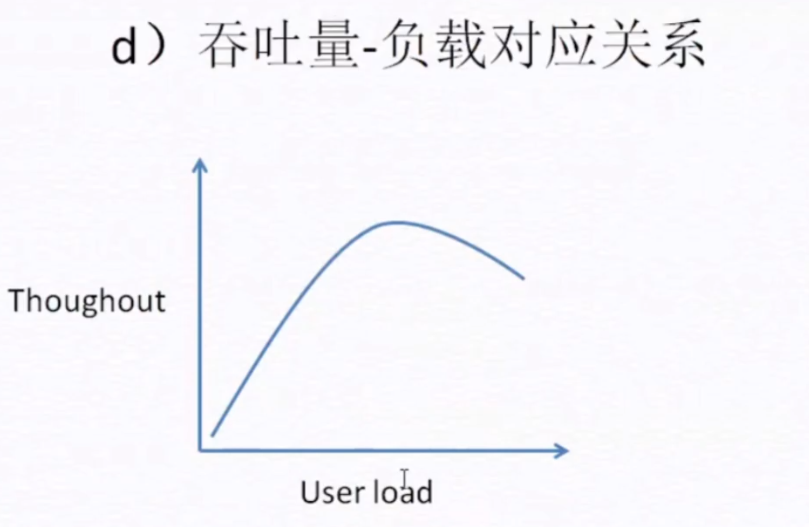
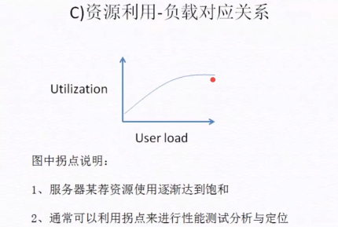

性能测试
什么是软件性能
定义
软件的性能是软件的一种非功能特性，它关注的不是软件是否能够完成特定的功能，而是在完成该功能时展示出来的及时性
性能测试定义
只通过自动化的测试工具模拟多种正常、峰值以及异常负载条件来对系统的各项性能指标进行测试
不同群体眼中的性能
用户眼中的视角

开发眼中的性能

数据库设计是否合理？是否出现数据严重倾斜
为不同的商家提供服务，商家有大有小（营业额和客户），就要考虑数据库是否设计的合理了。例如，多租户是如何存放数据，这个数据库存放了一百万数据，那个数据库快存放一亿数据了，数据分配严重不均，就是数据库设计的 不合理了。
包括代码中是否也有性能问题，有没有不合理的内存使用，内存泄漏，代码冗余，程序之间资源竞争
运维视角

系统的扩展性：在软件发布初期，肯能用户较少，服务器可能配置较低。但当软件火爆，用户激增，运维人员是否能马上提升资源。
测试眼中的性能是什么样的？
- 测试人员通常是做软件质量控制的一个角色，不仅仅是找bug，需要对整个软件的质量负责，性能也属于质量的一部分，因此测试人员眼中的性能应该是全面的，考虑的东西也需要全面。
- 测试人员需要考虑全面的性能，包括用户、开发、管理员等各个视角的性能
- 测试人员在做性能测试时除开要关注表面的现象如响应时间，也需要关注本质，比如用户看不到的服务器资料利用率，架构设计是否合理？代码是否合理等方方面面（测试过程中，性能不达标，需要判断是什么原因导致的性能不达标，分析系统的瓶颈是开发的问题，还是运维人员的问题）
性能测试的类型
基准测试：在给系统施加较低压力时，查看系统的运行状况并记录相关数做为基础参考
负载测试：是指对系统不断地增加压力或增加一定压力下的持续时间，直到系统的某项或多项性能指标达到安全临界值（最简单的判断：逐渐加压，性能从上升到下降。），例如某种资源已经达到饱和状态等。
压力测试：压力测试是评估系统处于或超过预期负载时系统的运行情况，关注点在于系统在峰值负载或超出最大载荷情况下的处理能力。
在负载测试后，继续施压，会出现什么情况，需要测试出来。
稳定性测试：在给系统加载一定业务压力的情况下，使系统运行一段时间，以此检测系统是否稳定
如果最大的压力为100，我们一般给60的压力做持续时间的稳定性测试。（会不会出现越用越卡，资源不释放的情况）
并发测试：测试多个用户同时访问同一个应用、同一个模块或者数据记录时是否存在死锁（用户同时申请一片资源）或者其他性能问题，如软件崩溃。（双十一抢购）
性能测试基本概念
1. 响应时间
定义：从用户发送一个请求到用户接收到服务器返回的相应数据这段时间就是相应时间
关键路径：下图为一次http请求经过的路径，请求会经过网络发送到web服务器进行处理，如果需要操作DB，再由网络转发到数据库进行处理，然后返回值给web服务器，web服务器最后把结果数据通过网络返回给客户端。
响应时间计算方法
响应时间 = 呈现时间 + 网络传输时间 + 服务器端响应时间 + 应用延时时间

响应时间和负载对应关系
例如：一家理发店可同时接待10位客人，每位客人剪发时间为15分钟。如果来了第11位客人，需要等待前10位客人中的一人剪完，这就是响应时间瓶颈。相应时间会突然增加的点，就是我们性能测试所要做的。（找响应时间的临界点）

图中拐点说明
- 响应时间突然增加
- 意味着系统的一种或多种资源利用率达到了极限
- 通常可以利用拐点来进行性能测试分析与定位
2. 吞吐量
Loadrunner 叫 TPS，Transactions Per Second（每秒传输的事物处理个数），JMeter 叫 throughput
定义：单位时间内系统处理的客户端请求的数量
计算单位：一般使用请求数/秒作为吞吐量的单位，出可以使用页面数/秒表示。另外，从业务角度来说也可以使用访问人数/天 或 页面访问量/天作为单位
计算方法：Throughput = (number of requests)/(total time)

图中拐点说明
- 吞吐量逐渐达到饱和
- 意味着系统的一种或多种资源利用达到了极限
- 通常可以利用拐点来进行性能测试分析与定位
3. 并发数
并发用户数：某一物理时刻同时向系统提交请求的用户数，提交的请求可能是同一个场景或功能，也可能是不同场景或功能。
比如：淘宝双十一，春节抢票，也要模拟这么多用户，进行抢购
在线用户数：某短时间内访问系统的用户数，这些用户并不一定同时向系统提交请求
系统用户数：系统注册的总用户数据
三者之间关系：系统用户数 >= 在线用户数 >= 并发用户数
4. 资源利用率
定义：指的是对不同系统资源的使用程度，通常以占用最大值的百分比来衡量
通常需要关注的服务器资源如下：
- CPU：就像人的大脑，主要负责相关事情的判断以及实际处理的机制（不要超过85%）
- 内存：大脑中的记忆块区，将眼睛，皮肤等收集到的信息记录起来的地方，以供cpu进行判断（不要超过85%）
- 磁盘IO：大脑中的记忆区块，将重要的数据保存起来（永久保存，关机或断电不会丢失，速度慢），以便将来再次使用这些数据
- 网络：带宽

5.其他常用概念
PV：访问一个URL，产生一个PV（Page View，页面访问量），每日每个网站的总PV量是形容一个网站规模的重要指标
UV：作为一个独立用户，访问站点的所有页面均算作一个UV（Unique Visitor，用户访问）